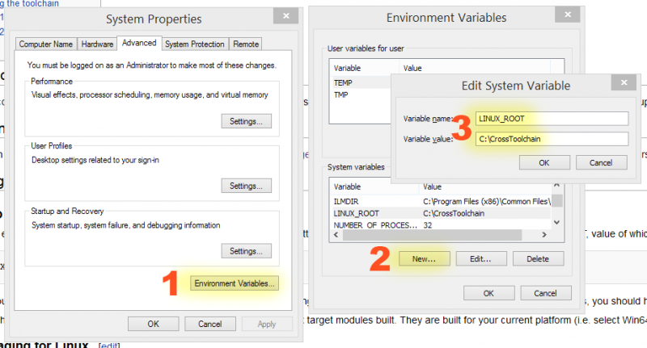

Compiling For Linux
Contents
Why cross-compilation
Cross-compilation was chosen in order to make it easier for game developers (who tend to have a centric workflow on a platform that differs from the deployment target). At the moment, this is only supported for Windows, Mac users currently have to resort to .
Platform Support for Cross-Compilation
Currently cross compilation from Windows is supported for Linux-x86_64 and Linux-ARM target platforms.
Support is currently for:
- On Windows | For Linux-x86_64
- On Windows | For Linux-ARM
Getting the toolchain
There are now 2 toolchain binaries available for cross compiling from Windows. One for cross compiling to Linux-x86_64 platforms and another for cross compiling to Linux-ARM platforms.
The Linux-x86_64 cross compile toolchain binaries can be downloaded from
- v4 clang-3.5.0-based - for UE4 <= 4.8 - v6 clang-3.6.0-based - for UE4 4.9 and 4.10 - v7 clang 3.7.0-based - for UE4 4.11, 4.12 and 4.13 - v8 clang 3.9.0-based - for UE4 4.14 and 4.15 - v9 clang 4.0.0-based - for UE4 4.16 and 4.17 - v10 clang 5.0.0-based - for UE4 4.18 - v11 clang 5.0.0-based - for UE4 4.19 (includes extra tools for LTO compared to v10)
The Linux-ARM cross compile toolchain binaries can be downloaded from
clang-3.5.0-arm
.
For other cross compile configurations see
(this is needed if you want different versions of the tools).
The clang v4 Linux-x86_64 cross compile toolchain can be automatically set up with this Powershell script Install-LinuxToolChain . Run Powershell as Administrator and paste the contents into the Powershell window and hit enter twice.
Using the toolchain
Setup
clang v8+
Add an environment variable (Control Panel->System->Advanced system settings->Advanced->Environment variables) named LINUX_MULTIARCH_ROOT. The value should be the path to the clang v8 directory containing the multiple linux architecture directories (for example one being x86_64-unknown-linux-gnu and another arm-unknown-linux-gnueabihf). Make sure the new environment variable has been registered to the system / application (MSVC) by rebooting the machine or restarting the app at least before continuing to the build step.
clang v4-7
Add an environment variable (Control Panel->System->Advanced system settings->Advanced->Environment variables) named LINUX_ROOT, value of which is the absolute path to your toolchain, without trailing backslash:

If you are using the Linux-ARM cross compile toolchain before running GenerateProjectFiles.bat below edit the following file in the UE4 source code:
.../UnrealEngine/Engine/Source/Programs/UnrealBuildTool/Linux/UEBuildLinux.cs
by commenting out the following line:
static private string DefaultArchitecture = "x86_64-unknown-linux-gnu";
and un-commenting the linux-arm architecture line just below it:
//static private string DefaultArchitecture = "arm-unknown-linux-gnueabihf";
After you made sure that variable is set, re-regenerate UE4 project files (using GenerateProjectFiles.bat) and restart Visual Studio. After this, you should have "Linux" available among Win32/Win64 configurations, and you should be able to cross-compile for it. Should but not always will. As of 4.17 you won't have it on a source version of the engine for some reason. Just don't trust this thing like I did and spend 5 minutes looking for it, just launch the editor and try packaging to linux again. At this point you are reading too much into this wiki page. Just download the toolkit, extract and set your environment variables. If this doesn't work then that's when you come back and read more.
You also need to rerun Setup.bat or .../UnrealEngine/Engine/Binaries/DotNET/GitDependencies.exe because that step will grab/copy libc++ stuff to .../UnrealEngine/Engine/Source/ThirdParty/Linux/LibCxx/. Otherwise, cross-compiling will fails with saying it cannot find standard C++ headers. If you haven't explicitly defined and set an environment variable of UE4_LINUX_USE_LIBCXX to 0, cross-compiling will use libc++ headers/libraries in there by default instead of the one inside the clang toolchain.
For packaging for Linux platforms (both x86_64 and ARM) the CrashReportClient is also needed to be built for the Linux configuration in addition to the default UE4Game project.
Notice that you may want to (re)build the Editor for your platform to get Linux target modules built. They are built for your current platform (i.e. select Win64 in configuration), and they are needed so that Unreal Editor and Unreal Frontend know how to cook/package games for Linux.
Note: If packaging for Linux (see below) fails it may be necessary to explicitly build UnrealPak and ShaderCompileWorker for the host platform, which in this case is windows (Win32 or Win64). To do this right-click on each of this project in the solution explorer and execute the "Build" command.
Note: If starting UE4Editor fails with message about not able to find libfbxsdk.dll, this can be fixed by copying libfbxsdk.dll from ...\UnrealEngine\Engine\Source\ThirdParty\FBX\2014.2.1\lib\vs2012\x64\release to the same location as the UE4Editor executable file where ...\UnrealEngine is the top location of the UE4 source code. For Win32 systems use the file located under ...\x86\release instead.
Packaging for Linux
From the editor
The easiest way to package a project is opening it in the editor and then using File->Package To->Linux (assuming that you have a cross-toolchain installed in the previous step and Linux target modules are built for the editor in question - if you don't see Linux in the list, then it's likely that one of the former is not true - see above ). After some time (which depends on the project in question and is rather short for sample project) you will have game assets and binaries in the directory you chose to package to.
The details of the packaging process can be seen by clicking the "Show Output Log" link. If this process fails with error message "unable to find UnrealPak or ShaderCompileWorker" see above about building them for the host (windows) platform.
Scp or otherwise copy it to a target machine (mounting a Samba share - if you know how to do that - may be better if target machine is low on disk space, this also reduces iteration times), chmod +x the target executable (which will be located in LinuxNoEditor/<ProjectName>/Binaries/Linux/ directory) and run it.
Additional Step for Linux-ARM platforms
An additional step is required for the packaged project to be runnable on Linux-ARM platforms. The following has been verified using the SunTemple project packaged using Unreal-4.6 and executed on NVIDIA's Jetson TK1 platform.
Assuming the packaged project is located at \Users\foo\SunTemple_Linux open the following location:
\Users\foo\SunTemple_Linux\LinuxNoEditor\Engine\Binaries\Linux
and replace libopenal.so.1 with the version from:
...\UnrealEngine\Engine\Source\ThirdParty\OpenAL\1.15.1\lib\Linux\arm-unknown-linux-gnueabihf\libopenal.so
where ...\UnrealEngine is the location of the UE4 source code. Please be sure to rename libopenal.so to libopenal.so.1.
Now the project can be copied over to the target machine, chmod+x the target executable and run it as instructed above.